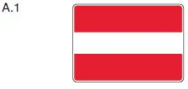
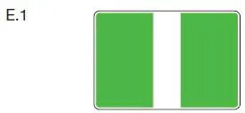

§ 6.28a Schleuseneinfahrt und -ausfahrt
Binnenschifffahrtsstraßen-Ordnung
1. Sind mehrere Schleusen vorhanden, wird die Weisung zur Benutzung durch Richtungsweiser gegeben, die aus zwei weißen Signallichtern nebeneinander bestehen, die folgende Bedeutung haben:
a) linkes festes Licht, rechtes Gleichtaktlicht: rechte Schleuse benutzen;
b) rechtes festes Licht, linkes Gleichtaktlicht: linke Schleuse benutzen;
c) beide feste Lichter: bis zur Einweisung warten;
d) beide Gleichtaktlichter: beide Schleusen benutzbar.
Ein Fahrzeug, das wegen seiner Abmessungen nur eine bestimmte Schleuse benutzen kann, muss warten, bis ihm diese zugewiesen wird.
2. Die Einfahrt in die Schleuse wird bei Tag und bei Nacht durch Signallichter geregelt, die auf einer Seite oder auf beiden Seiten der Schleuse gezeigt werden. Diese Signallichter haben folgende Bedeutung:
a) zwei feste rote Lichter übereinander: Einfahrt verboten, Schleuse außer Betrieb;
b) ein festes rotes Licht oder zwei feste rote Lichter nebeneinander: Einfahrt verboten, Schleuse geschlossen;
c) das Erlöschen eines der beiden nebeneinander gezeigten roten Lichter oder ein festes rotes und ein festes grünes Licht nebeneinander oder ein festes rotes und ein festes grünes Licht übereinander: Einfahrt verboten, Öffnung der Schleuse wird vorbereitet;
d) ein festes grünes Licht oder zwei feste grüne Lichter nebeneinander: Einfahrt erlaubt.
Zusätzlich zu Satz 1 kann die Einfahrt in die Schleuse bei Tag und bei Nacht für ein Klein- und Sportfahrzeug durch zusätzliche Signallichter besonders geregelt werden. Die Signallichter nach Satz 3 bestehen aus je einem roten und einem grünen Gleichtaktlicht nebeneinander und sind mit einem zusätzlichen Schild nach Anlage 7 Abschnitt II Nummer 3 mit dem Hinweis „Klein- und Sportfahrzeug“ gekennzeichnet; sie werden gemeinsam mit den Signallichtern nach Satz 1 oder an den für Klein- und Sportfahrzeuge besonders ausgewiesenen Wartestellen gezeigt. Sind Signallichter nach Satz 3 vorhanden, sind ausschließlich diese für ein Klein- und Sportfahrzeug für die Einfahrt maßgeblich. Die Signallichter nach Satz 3 in Verbindung mit Satz 4 haben folgende Bedeutung:
a) ein rotes Gleichtaktlicht (Wiederkehrfrequenz 12 Sekunden): Einfahrt für Klein- und Sportfahrzeuge verboten;
b) ein grünes Gleichtaktlicht (Wiederkehrfrequenz 12 Sekunden): Einfahrt für Klein- und Sportfahrzeuge erlaubt.
Das Verbot der Einfahrt nach Satz 1 in Verbindung mit Satz 2 Buchstabe a bis c, auch in Verbindung mit Nummer 4 Satz 1, oder nach Satz 3 in Verbindung mit Satz 5 und 6 Buchstabe a, auch in Verbindung mit Nummer 4 Satz 1, ist zu beachten.
3. Die Ausfahrt aus der Schleuse wird bei Tag und bei Nacht durch folgende Signallichter geregelt:
a) ein festes rotes Licht oder zwei feste rote Lichter: Ausfahrt verboten;
b) ein festes grünes Licht oder zwei feste grüne Lichter: Ausfahrt erlaubt.
Das Verbot der Ausfahrt nach Satz 1 Buchstabe a ist zu beachten. Sind mehrere Schleusen vorhanden und ist für alle die Ausfahrt freigegeben, hat das von Steuerbord kommende Fahrzeug die Vorfahrt.
4. Anstelle des roten Lichtes oder der roten Lichter nach Nummer 2 Satz 1 in Verbindung mit Satz 2 und Nummer 3 kann das Tafelzeichen A.1 (Anlage 7), anstelle des grünen Lichtes oder der grünen Lichter nach Nummer 2 Satz 1 in Verbindung mit Satz 2 und Nummer 3 kann das Tafelzeichen E.1 (Anlage 7) gesetzt werden. |  |
 |
5. Werden keine Signallichter oder keine Tafelzeichen gezeigt, ist die Einfahrt in die Schleuse oder die Ausfahrt aus der Schleuse ohne besondere Anordnung der Schleusenaufsicht verboten.